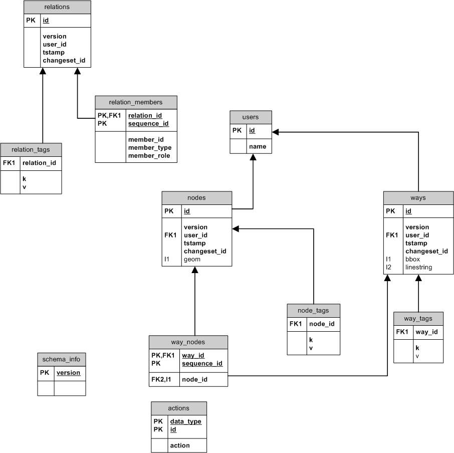

Open Street Map (OSM)
TOTUS uses the simple schema representation of the OSM data model, as required by the OSM planet file loader osmosis

Nodes
A node is the atomic element in the OSM data schema and used to construct all linear features. It holds the only geometry needed by OSM to represent linear map features and may or may not have any attributes. Attribute are stored as an extensible list in what is a EAV representation of spatial features. Nodes are allowed to be stranded (isolated from road network) when marked as an amenity (Point Of Interest - POI), but are usually the constituent parts of a linear feature.
nodes:
The node table is one of the three data primitive tables in the OSM physical model. It holds all the information needed to identify a vertex and revision it's changes. The OSM simple schema used by TOTUS only stores the most recent version of all data primitives.
- id (BIGINT): the node id allocated by OSM
- version (INT): it's internal version number, eg. 14th change
- user_id (INT): reference to user who made last change
- tstamp (TIMESTAMP): when last updated
- changeset_id (BIGINT): reference to its change set (not stored here)
- geom (POINT): the vertice position (2D or 3D) in geographical coordinate system and WGS84
node_tags:
Extensible set of attribute type/value pairs that holds any attribution associated with the vertex, eg. a roundabout, amenity, etc. Most nodes only exist to describe ways, however they may still have attributes that provided more information about the linear feature they are part of.
- node_id (BIGINT): the id of parent OSM node
- k (TEXT): attribute type tag
- v (TEXT): attribute value (stored as character string)
Ways
A way identifies any linear map features, eg. a road, ferry route, railway line, cycle way, tramping track, area, etc. Polygon features are represented as closed ways, but multi-polygons features can only be represented using relations, eg. relationship amongst all it's constituent area features.
ways:
- id (BIGINT): the way id allocated by OSM
- version (INT): it's version number
- user_id (INT): reference to user who made last change
- tstamp (TIMESTAMP): when last updated
- changeset_id (BIGINT): reference to its change set
- bbox (ENVELOPE): bounding box geometry, not part of OSM model; created to allow efficient searching using indexed intersect operator (
&&) by osmosis - linestring (LINESTRING): the complete linear feature, not part of OSM model; created by osmosis
way_nodes:
A way's constituent vertices. As a linear feature a way must have at least 2 bounding nodes (for efficiency OSM limits number of nodes to 2000)
- way_id (BIGINT): the parent OSM way
- node_id (BIGINT): the OSM node
- sequence_id (INT): sequence of the node in the way, used to maintain digitisation direction and to construct the linear feature correctly
way_tags:
Extensible list of way attribution stored as generic key/value k/v pairs. Although any properties can be stored here, OSM encourages a standard way of denoting tags to allow for interoperability of tools using OSM data.
- way_id (BIGINT)
- k (TEXT): attribute key
- v (TEXT): attribuute value
Relations
Relations are used to construct complex features from nodes, ways or even other relations and may be used to represent entities, eg. turn restrictions. Relations groups related features together, eg. routes. A relation consist of feature or relation members, each with it's own role in the relation. As with other primitives relations may have an arbritary number of attribute tags.
relations:
- id (BIGINT): id allocated by OSM
- version (INT): it's revision
- user_id (INT): the user who last updated the relation
- tstamp (TIMESTAMP): when the relation was last updated
- changeset_id (BIGINT): reference to its change set
relation_members:
The data primitives that are members of the relation.
- relation_id (BIGINT): the relation this member is part of
- member_id (BIGINT): the id of a data primitive, eg. a node, way or relation
- member_type (CHARACTER(1)): specifies the type, eg. node, way or relation (where to resolve the above member id)
- member_role (TEXT): the member's role within the relation
- sequence_id (INT): the member's order within the relation
relation_tags:
Any attributes associated with the relation, eg. public transport route number.
- relation_id (BIGINT)
- k (TEXT): relation attribute key
- v (TEXT): attribute value
Metadata
The following tables assist in revisioning the content and structure of the simple schema. This information is dependent on by the schema objects and osmosis when loading data to the target schema. Osmosis support incremental data loads and use the revision history to only update the records affected in a change set.
users:
These are OSM users that have made changes to loaded dataset. OSM revisions all changes made to data primitives and their attribution, however OSM simple does not hold any historical data, only the latest.
- id (INT): the user id allocated by OSM
- name (TEXT): OSM user name, chosen by user
schema_info:
This table holds the version number of the OSM simple schema, currently version 5. This allows osmosis to know which schema to target when loading the data.
- version (INTEGER)
actions:
- data_type (CHARACTER(1))
- action (CHARACTER(1))
- id (BIGINT)
{kind=link}